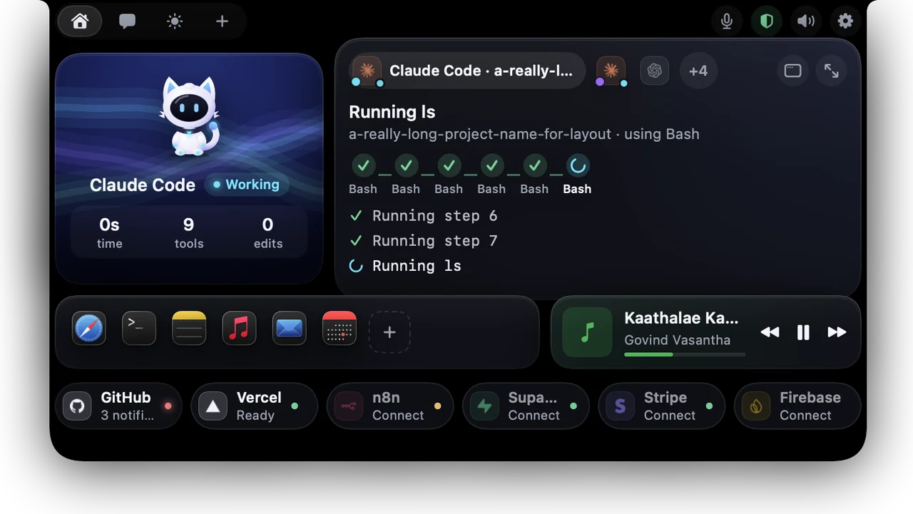
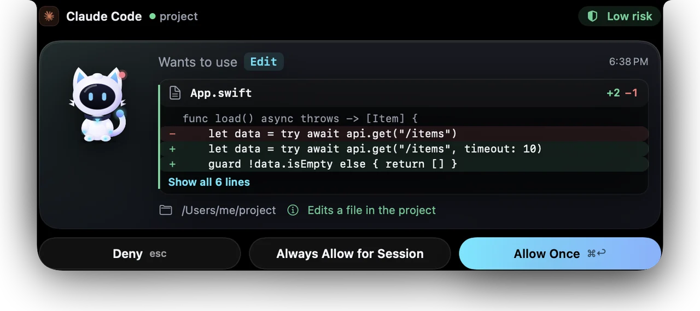
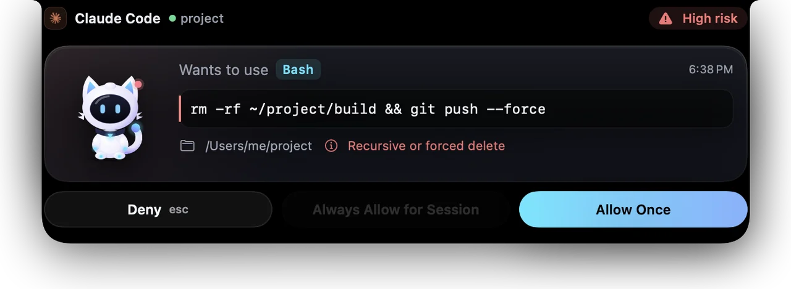
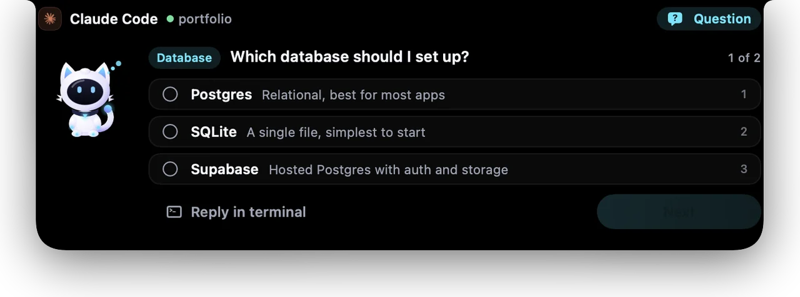
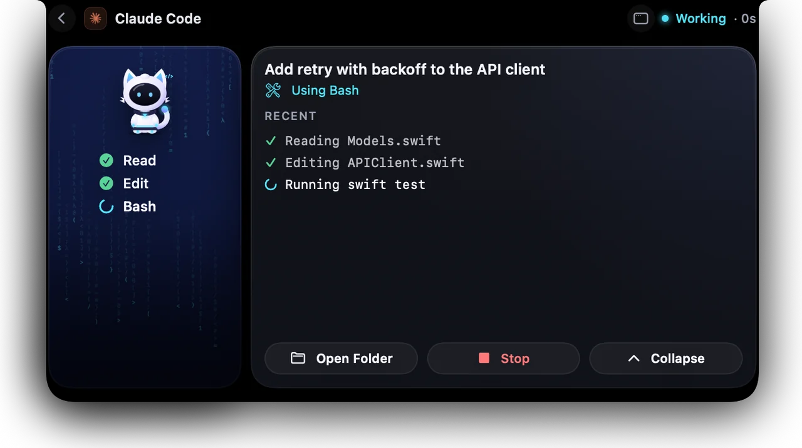
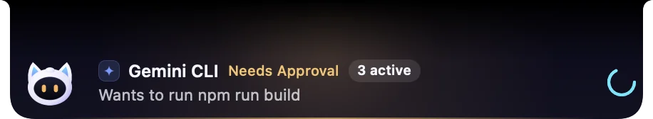
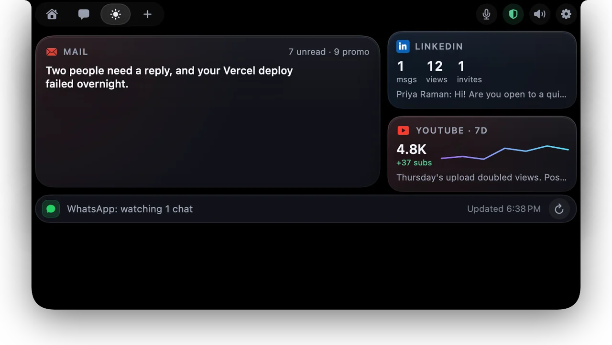

Every session, one glance
Two Claude Code windows, Codex, Cursor? Each live session gets its own chip, labelled by project. The one that needs you comes first; the rest wait under “+N”.

Nova lives in your MacBook notch. It shows what Claude Code, Codex, Cursor and Gemini are doing, lets you see every change before you allow it, guards your Mac, and talks with you.
Works with


Real recordings and screens from Nova, not mock-ups. Scroll, and the Mac follows along.
Two Claude Code windows, Codex, Cursor? Each live session gets its own chip, labelled by project. The one that needs you comes first; the rest wait under “+N”.

When an agent wants to edit a file, Nova shows the exact diff in red and green, with the line counts. Secrets in it are hidden with dots.

Deletes, force-pushes and scripts from the internet are marked high risk and need a second click. Reverse shells and curl | sh are always denied.

When Claude asks you to choose, the options appear in the notch. Click one and Claude carries on. Or reply in the terminal.

Open a session to see each tool it used and what it's doing now, with the mood scene behind Nova: falling code while it codes.

Most of the time Nova is a thin strip under the notch: who's working, on what, and how many sessions are live.

Nova is drawn in code, joint by joint, so it can really move. It breathes, looks at your cursor, fidgets when it's bored, and reacts to everything your agents do. Rub its head.
Move your mouse · rub its head · click it
The beat is made live in your browser. In the app, Nova finds the real beat of your Spotify or Music song, on your Mac.
Hold ⌥ Space, or say “Hey Nova”, and ask. Nova answers out loud, in English or Tamil.
Pick a phrase to hear what Nova says.
Nova Guard learns what's normal on your Mac and tells you the moment something changes: a new admin account, a remote login, an unknown startup item, another app using your microphone.
Checks run on your Mac every few minutes. Alerts name the app or account involved, and every automatic fix can be undone.
/etc/sudoers.dcurl | sh are always denied; running ones are stoppedNova controls your Mac by voice, and it always asks before anything that can't be undone.
“Open Safari.” “Hey Spotify.” “Google swift concurrency.” “New tab.” “Close Slack.” “Timer 10 minutes.” “Take a screenshot.”
“Send Amma ‘I'll be late’ on WhatsApp.” Nova finds the chat, reads the message back, and sends it only when you say “send”. Or “…at 10 pm” to schedule it.
Threats, risky settings, a hungry app, low disk, battery health, who's using the microphone. One sentence back, and the details in Nova Guard.
“Get my work day ready.” Nova shows its plan, does the safe steps by itself and waits for your “go” before sending, typing or closing anything.
“Click Continue” presses the button. Buttons that send, delete, buy or allow need one click from you. Voice never approves an agent.
“What's next?” “Remind me at 5 to call Amma.” A nudge five minutes before each meeting, with a Join button.
“Start my work day” opens your apps, reads today's calendar and starts the music. Any Apple Shortcut runs by name.
Claude Code and Codex usage from your own logs: this 5-hour window, the week, and when you'll hit the limit at this pace.
Use free Groq, OpenRouter or Gemini keys, or a model on your Mac. If one is busy, Nova quietly asks the next.

Gmail, YouTube and LinkedIn summarised into what actually needs you today.
Good-morning messages to the people you pick and reply drafts in your style. You review them, and nothing goes out while you're offline.
Spotify and Music in the notch. Turn on “Dance to music” and Nova dances on the beat.
Chat with Claude, OpenAI, Gemini, or a local model through Ollama or LM Studio. Keys stay in the Keychain.
Stays on your Mac: agent activity, security checks, your voice, the beat of your music, and your settings.
Leaves only when you ask: chat questions and drafts go to the AI provider you chose, with your own key.
Never: analytics, tracking or telemetry. Keys live in the Keychain, not in files.
| Feature | Typical notch app | Nova |
|---|---|---|
| Live agent sessions in the notch | Yes | Yes, many at once |
| See the diff before you allow an edit | Rarely | Yes |
| Answer the agent's questions in the notch | Sometimes | Yes |
| Voice assistant, on-device | No | Yes, English and Tamil |
| A character drawn live, with 18 moods | Sometimes, as pictures | Yes, and it dances |
| Mac security monitoring with undoable fixes | No | Yes |
macOS 15 or later. Works on MacBooks with a notch and in the menu bar on other Macs.
Get the source on GitHubNova is open source (MIT). Build it with scripts/build_app.sh. It isn't notarized yet, so the first time, right-click the app and choose Open.
No. Nova draws its animations outside the normal layout work, skips frames when nothing visibly changes, and pauses when the notch is hidden or your screen is locked.
Never. Nova can deny dangerous commands automatically, but allowing always needs your click, and high-risk commands need two. Voice can deny, never approve.
Only if you turn on “Hey Nova”. Then it listens on your Mac only, shows that it's listening, and pauses while your screen is locked or another app is using the microphone. Otherwise it listens only while you hold ⌥ Space.
Yes, for the built-in commands, including Tanglish like “paattu podu” or “enna nadakkuthu”. Tamil speech recognition depends on your macOS version supporting it offline; Settings tells you if it does.
Only safe, undoable fixes in your own account happen automatically. Anything that needs admin rights waits for you and shows the exact command before macOS asks for your password.
Claude Code, Codex, Cursor, Gemini CLI, Antigravity and VS Code. Any tool can report to Nova's local socket.